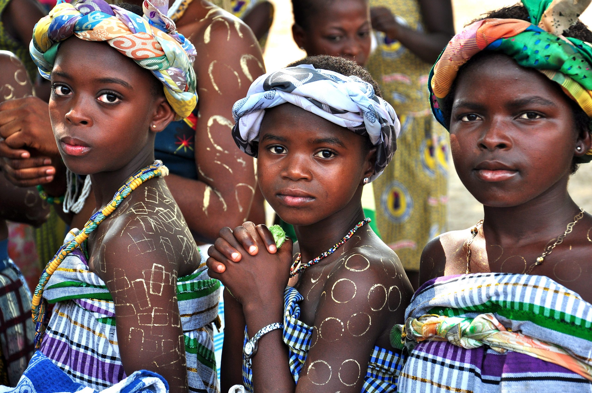

Akan names are derived from the Ghanaian culture. That's because the Akan people often name their children after the day of the week they were born. Depending on the gender, male and female names are different. Below are the names for both genders. Click this link to read more about the Akan people of Ghana.
The Akan are a meta-ethnicity living in the countries of present-day Ghana and Ivory Coast. Akan culture can also be found in the Americas, where a number of their descendants were taken as captives.
Read more